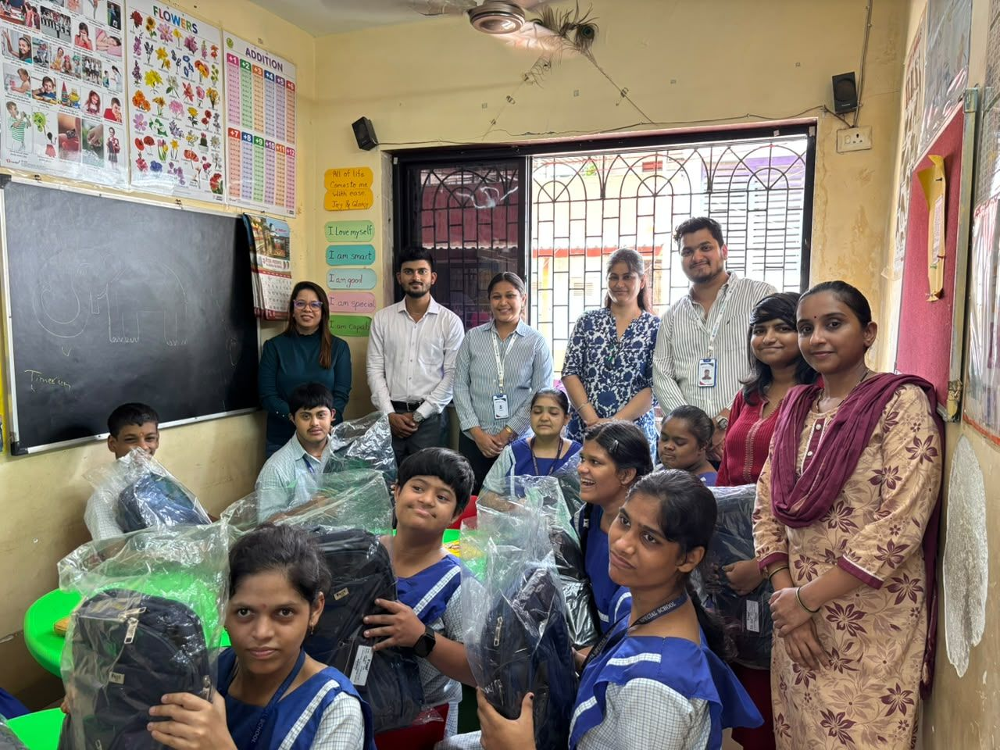

School Starter Kit Distribution
Distributing school kits — bags and stationery — to students.
Veracitiz helps large enterprises build the trusted data foundation that AI agents need — then design, deploy and govern those agents across finance, supply chain, banking and operations. On IBM watsonx, Microsoft, AWS and open source.
Every enterprise is now asking where AI agents can take on real work — closing books, reading contracts, planning stock, answering the business in plain language. The hard part isn't the agent. It's giving it data it can trust, permissions it can't abuse, and a person who owns the outcome.
That has been our work since 2011: getting enterprises to one trusted version of the number. Now we put agents on top of it.
of data engineering workflows will be automated by agentic data management by 2029.
Gartner prediction, Top Trends in Data & Analytics, Feb 2026Agents without governance, identities and audit trails don't reduce data risk — they accelerate it.
Why we build the trust layer before agents go liveof planning, analytics and data work inside enterprises — the context agents need to act correctly.
IBM Gold Partner since 2011Four layers we design together, so agents reach production instead of stalling in pilots. Select a layer.
From strategy to running operations — one partner across the whole data and AI lifecycle.
Agents we design and build for enterprise teams — always with a person who owns the outcome. Pick a function, then an agent to watch it run.
Agent runs are illustrative of how each agent works.
Every sector breaks its data in a different place. We start where yours does.
The data foundations we build are what agents run on. A few results from the enterprises we work with.
“Veracitiz delivered quick ROI by digitizing our complicated ICM process, that has now been rendered ‘person-agnostic’.”
Ex. VP, IT · top 10 private non-life insurer“What the exercise with Veracitiz has provided us is a robust solution — predictions that are no longer ‘just’ intuitive.”
DGM, Demand Planning & Distribution · Lupin“The team has consistently displayed a thorough understanding of our business processes — that was the real value-add.”
AVP, Business Intelligence · global professional services firmSwipe for more →
Start with one problem worth solving. Scale what works. We stay after go-live.
Find the agent use cases with real value, and check whether the data underneath is ready for them.
Fix, govern, and describe the data the first agents need — lineage, quality, access and a semantic layer.
Deploy the first agents into a real workflow with guardrails, evaluation and a human approval step.
Extend to new functions, monitor agents and models in production, and keep improving them.
Founded in 2011 by former Deloitte and IBM colleagues. 150+ techno-functional consultants and 300+ man-years of analytics and data science experience, serving large enterprises across India, the Middle East, Africa and Southeast Asia.
Meet the leadership team →
IBM Gold Partner, implementation partner and reseller. First partner in India and the Middle East with IBM Cognos TM1 Gold accreditation — and certified across watsonx, Planning Analytics, Cognos, SPSS and DataStage.
Onshore where you need us, offshore where it saves you money — with a shared pool for month-end and year-end peaks.
Practical thinking from the consultants who deliver the work.
Swipe for more →
Planned article topics — titles to be confirmed.
Still unsure where to start? A 30-minute call usually settles it.
Agentic AI uses AI agents that plan and carry out multi-step work across your systems — reading documents, querying data, updating plans and routing decisions to people. We design, build, govern and run them on IBM watsonx, Microsoft, AWS and open-source frameworks, on top of a trusted data foundation.
Agents act on whatever data they can reach. Without governed, well-described data — plus agent identities, permissions and audit trails — they spread errors faster. We make the data AI-ready before agents go live.
Yes — an IBM Gold Business Partner since 2011, implementation partner and reseller, and the first partner in India and the Middle East to achieve IBM Cognos TM1 Gold accreditation.
IBM watsonx and the IBM data and analytics portfolio, Microsoft Azure and Power BI, AWS, and open-source models and agent frameworks. We pick the platform that fits the problem.
Offices in India, the UAE, Singapore and Mauritius, serving enterprises across India, the Middle East, Africa and Southeast Asia.
As an IBM Gold Partner, implementation partner and reseller, we help enterprises choose, license, implement and run IBM's data and AI software — from planning and reporting to watsonx agents.
The IBM products we design, build and run, and what we do with each.
AI-powered planning, budgeting and forecasting on the IBM TM1 engine, with what-if scenarios and planning agents through watsonx Orchestrate.
Enterprise reporting and dashboards with an AI assistant, built-in forecasting and governed self-service.
Financial close, consolidation and reporting in one auditable solution, integrated with Planning Analytics.
A trusted tool for statistical analysis, from descriptive summaries to regression and survey analysis, used through menus or syntax.
A visual environment for data mining and predictive modelling, where analysts build and compare models without writing code.
Optimisation with the CPLEX engine finds the best plan when capacity, cost, time and rules all pull against each other.
An AI studio to build, tune and deploy foundation models, machine learning and AI applications.
Build, run and manage AI agents and assistants that take on work across business systems.
Plain-language questions answered from governed metrics and Cognos content.
Conversational assistants that answer questions and complete tasks for customers and employees, in chat and voice channels.
AI-powered search and document understanding across contracts, manuals, reports and other enterprise content.
An open, hybrid data lakehouse that unifies structured and unstructured data for analytics and AI.
Batch, streaming and replication pipelines in one place — DataStage, StreamSets and data observability.
Real-time data streaming from the creators of Apache Kafka — connecting, processing and governing data as it happens.
Enterprise database for transactional and analytical workloads, on premises and in the cloud.
An integrated data and AI platform on Red Hat OpenShift that brings data access, governance and analytics services together.
Governance for AI models and agents across their lifecycle — risk, compliance, evaluation and audit.
Data catalog, quality, lineage and data products in one place (formerly Knowledge Catalog and Manta).
Security and monitoring that protects sensitive data across hybrid and multicloud environments.
Application resource management that analyses demand and makes resourcing decisions to keep performance steady and cost in check.
AI for IT operations that correlates alerts, surfaces probable causes and helps teams resolve incidents sooner.
Real-time application performance monitoring with automatic discovery across services, containers and infrastructure.
Network performance monitoring and observability that uses telemetry and flow data to find problems before users do.
We design, build and run data and AI solutions on Microsoft's analytics and Azure stack — from Fabric and Power BI to AI agents.
The Microsoft products we design, build and run, and what we do with each.
Reports, dashboards and semantic models, with Copilot for natural-language analysis.
Build, evaluate and deploy AI models and agents on Azure.
Build agents and copilots that work across Microsoft 365 and business systems.
One platform for data engineering, warehousing, real-time analytics and Power BI on OneLake.
Spark-based lakehouse for data engineering and machine learning on Azure.
Data catalog, classification, lineage and compliance across the Microsoft estate.
We design, build and run data and AI solutions on AWS — from data lakes and warehouses to generative AI and agents.
The AWS products we design, build and run, and what we do with each.
Cloud BI with dashboards and natural-language questions.
Managed access to leading foundation models, with tools to build agents and RAG applications.
Build, train and deploy machine learning models at scale.
Cloud data warehouse for analytics at scale.
Serverless data integration over an S3 data lake.
Central permissions and governance for data lakes.
As an Anaplan partner, we implement and extend connected planning across finance, supply chain, sales and workforce — and now its AI agents.
The Anaplan products we design, build and run, and what we do with each.
Scenario planning on the Polaris and Classic engines, plus packaged planning applications.
Forecaster (successor to PlanIQ), Optimizer, CoPlanner and role-based AI agents.
Data pipelines, connectors and APIs that move data into and out of Anaplan.
Application lifecycle management, workspace governance and access control.
We build open-source data and AI stacks that run on your cloud or on premises — with the same engineering and support standards as commercial platforms.
The Open source products we design, build and run, and what we do with each.
Open-source dashboards and data exploration.
Self-hosted models such as Llama, Mistral and Granite.
Agent workflows and the machine-learning lifecycle.
Real-time streaming and large-scale data processing.
Orchestration, transformation and a reliable open database.
Open lineage and automated data-quality testing.
Founded in 2011 by former Deloitte and IBM colleagues, Veracitiz is led by consultants who still work alongside clients — on the data, the planning models and now the AI agents that large enterprises run on.
Setting direction across strategy, sales, analytics and data & AI.
The architects, consultants and delivery leads who turn strategy into systems that stay in production.
Join a team of innovators and problem solvers. Explore our current openings below.
Roles open now across our teams.
No openings right nowCurrently, there are no openings available. Please check back later.
We still want to hear from you. Share your resume and we'll reach out when a suitable opportunity comes up.
Driven by responsibility and compassion, Veracitiz supports communities through education, empowerment and community support.

Five programmes across education, empowerment, digital literacy and health awareness.
Distributing school kits — bags and stationery — to students.
Toys and learning materials for children with special needs.
Computer systems donated to Asmita Special School to set up a digital learning corner for students with special needs.
Supporting Child Vision Foundation's education projects with resources for schools across grades.
Sponsored and financed with Swayam Talk: a documentary on the importance of medical care for people in remote places.
Banks run on documents, regulations and branch networks. We build the governed data and the agents that cut manual back-office work and make regulatory and branch reporting dependable.
Arab Bank runs governed daily reporting across 600+ branches.
Applications, KYC files and statements move by hand between teams and systems.
Numbers are rebuilt every cycle from many sources, with little traceability.
Leaders lack a single daily view of performance across the network.
Customer, product and finance data sit in separate systems with different definitions.
Read, extract, check and route documents, with a human approval step.
One set of definitions behind regulatory, finance and branch reports.
Performance, targets and trends for every branch in one place.
Budgets, forecasts and what-if scenarios on IBM Planning Analytics.
Insurers juggle complex commission rules, document-heavy claims and many sales channels. We turn those into consistent models and agents that your teams can trust and audit.
A top 10 private non-life insurer digitised its incentive and commission process (ICM) and made it person-agnostic.
Commission and incentive schemes change often and depend on person-specific spreadsheets.
Claims arrive as documents in many formats and need manual reading and checks.
Performance by agent, partner and product is hard to compare.
Month-end and regulatory numbers depend on manual consolidation.
Rules held in a governed model, so results no longer depend on one person.
Extract, classify and route claims documents with a human decision step.
Sales, persistency and productivity by channel, agent and product.
Budgets, forecasts and consolidated reports on one set of numbers.
Pharma supply chains span thousands of SKUs, many distributors and shifting schemes. We build forecasting, distribution planning and scheme models that go beyond intuition.
Lupin lifted forecast accuracy from 72% to 85% across 1,300+ SKUs.
Large SKU portfolios and seasonal swings make forecasts hard to trust.
Stock sits in the wrong place while others run short.
The impact of discounts and schemes is hard to measure.
Quality, traceability and approvals matter on every number.
Statistical and machine-learning forecasts across products and regions.
Plan stock and supply across the network against real constraints.
Test scheme designs before launch and track results after.
Lineage, quality and access you can show to auditors.
Retail and consumer companies plan across thousands of stores, SKUs and promotions. We replace manual consolidation with connected planning and analytics your teams can act on.
Landmark Retail cut budgeting and consolidation time by 75% across 1,200+ stores. India's largest FMCG company rebuilt a 12-day consolidation cycle at item level.
Budgets and closes depend on spreadsheets passed between many teams.
Plans must hold at store, category and SKU level at the same time.
Promotion and trade-spend returns are hard to prove.
Finance, merchandising and supply chain work from different numbers.
Budgets and forecasts from store up to company, in one model.
Faster, auditable roll-up across entities and formats.
See what each promotion returns, by product and channel.
Detail down to item level, rebuilt without manual effort.
Plants plan around capacity, materials, labour and long project timelines. We combine planning and optimisation so plans reflect what the shop floor can actually do.
Larsen & Toubro Heavy Engineering plans with Veracitiz.
Plans ignore the constraints that decide what can be built.
Cost by product, order or project arrives late and is hard to reconcile.
Engineering projects need rolling plans across many phases.
Production, procurement and finance each keep their own numbers.
Plans built around machine, material and labour limits.
Decision optimisation (CPLEX) for trade-offs with many constraints.
Plan versus actual cost by product, plant and project.
One connected model for production, procurement and finance.
Telecom operators track revenue, subscribers and network performance across many circles and products. We build reporting and planning that give one trusted view across them.
Bharti Airtel works with Veracitiz.
Each circle reports in its own way, so group views take effort.
ARPU and subscriber metrics change quickly and need frequent forecasts.
Billing and usage data are large and spread across systems.
Linking plans to results takes manual reconciliation.
Consistent reports and dashboards across circles and business lines.
Budgets and rolling forecasts by circle and product.
Compare circles and products, and see what drives the gap.
Shared definitions and lineage behind every report.
Airlines and logistics operators depend on tight links between passengers, cargo and network operations. We build integrated planning that keeps commercial and operating plans in step.
Air Mauritius works with Veracitiz.
Matching seats and cargo space to demand changes constantly.
Fuel, crew and handling costs need to link to the plan.
A schedule change touches many plans at once.
Commercial, operations and finance plan in different tools.
Passenger, cargo and operating plans in one connected model.
Volume and revenue forecasts by route and period.
See the effect of schedule or cost changes across the plan.
Plan versus actual for leaders across the network.
Services firms live on headcount, utilisation and project margin. We build planning that connects people, projects and finance, so leaders can see profitability before the quarter ends.
Genpact lowered IT operating costs by 35% after moving planning to the cloud. Mindtree also works with Veracitiz.
Hiring and bench decisions rely on spreadsheets and lag demand.
Billable and bench time are hard to track consistently.
Margin by project arrives after the opportunity to act.
Shared costs are allocated by manual rules.
Demand-driven headcount plans by skill and location.
Targets, forecasts and actuals in one view.
Revenue, cost and margin by project and client.
Moving planning to the cloud for lower IT run cost.
Built on TM1’s powerful calculation engine, transcend the limits of manual planning processes
Our TM1 consultants implement and support IBM Planning Analytics for financial planning and analysis, enterprise performance management and wider resource planning, so you decide faster with better data.
Streamline financial workflows, improve data accuracy and gain valuable insights.
Deep TM1 knowledge and implementations tailored to your business requirements.
Align strategy with operations, monitor and optimise performance across departments, and extend to wider resource planning.
Integrate business areas, streamline processes and act on practical insights.
Insights straight from your data
Forecasts from evolving trends
Granular what-if scenarios
Timely, reliable, accountable plans
Faster decisions, shared through visualisations
Faster, more accurate plans for FP&A, sales and supply chain
Integrates with your IT infrastructure
Accurate modelling of business rules and dimensions
Approval workflows
Excel integration, processed on a central server
Real-time driver-based budgeting
What-if scenarios and self-service dashboards
100% parity between cloud and on-premises
Quick ROI on a gold-standard platform through a world-class, bespoke implementation, backed by many successful implementations and satisfied customers.
Certified consultants manage user queries, optimise model workflows, monitor system logs, orchestrate ETL activities and audit server RAM utilisation, so your resources are fully used.
Bring older implementations up to date with the latest business rules and optimised workflows, for time, cost and effort efficiency.
Move to the cloud to save on infrastructure costs, or back to on-premises for sensitive information, across multi-OS and varied host environments.
AI-fueled business intelligence platform that supports the entire analytics cycle, from discovery to deployment
Veracitiz is your Cognos consulting partner for IBM Cognos Analytics: effective BI solutions, advanced analytics and enterprise architecture consulting, matched to your business needs. Cognos Analytics runs on a single, integrated and highly secure platform where business users can explore virtually all types of data.
End-to-end help, from first rollout to ongoing support.
Data modelling, visualisation, reporting and dashboard development.
Reports built with the Cognos BI reporting tool, tailored to your needs, for accurate, meaningful insight.
Review your existing architecture, find improvements and design solutions that streamline processes and align technology with strategy.
Break down silos, share insights easily
Automated data preparation
Dashboards and reports with AI recommendations
ML pattern detection for hidden insight
Start small, grow on any budget
Cloud or on-prem data, one source for all users
Capture, annotate and share visuals by email or Slack
Natural-language questions, actionable answers
ML combines related sources into one trusted data module
AI-recommended visualisations
Quick ROI on a gold-standard platform through a world-class, bespoke implementation, backed by many successful implementations and satisfied customers.
Certified consultants manage user queries, optimise model workflows, monitor system logs, orchestrate ETL activities and audit server RAM utilisation, so your resources are fully used.
Bring older implementations up to date with the latest business rules and optimised workflows, for time, cost and effort efficiency.
Move to the cloud to save on infrastructure costs, or back to on-premises for sensitive information, across multi-OS and varied host environments.
Financial close, consolidation and reporting in one solution, integrated with Planning Analytics, so group numbers are accurate and traceable.
IBM Controller is part of our IBM Data and AI work. We advise, license, implement and run it.
Roll up entities, currencies and intercompany balances in one place.
Follow the close process with clear steps and an audit trail.
Produce statutory and management reports from the same numbers.
Chart of accounts, entity structure and eliminations designed with your finance team.
Build, load, test and go live with parallel runs.
Bring existing Controller estates to the latest version or to the cloud.
Leading statistical software used by academia, insitutes and organizations
Experienced statisticians and analysts use SPSS, a widely recognised tool for statistical analysis and predictive modelling, to find patterns, trends and correlations in your data, from data cleaning and preparation to advanced statistical modelling. We serve organisations and students alike.
An intuitive interface and a wide range of statistical tools to analyse data, run surveys and produce reports, with hands-on guidance.
SPSS Statistics (statistical tools and predictive modelling), SPSS Modeler (drag-and-drop predictive models) and IBM Watson Studio (machine learning, data science and predictive analytics).
Time-series analysis revealed seasonal sales patterns and trends, improving inventory management, sales forecasting and profits.
Logistic regression identified key predictors of readmission (age, previous conditions, initial treatment), leading to strategies that reduce readmissions and improve patient care.
Python and other open-source tools are popular and capable, but SPSS offers a user-friendly graphical interface and a comprehensive suite of statistical tests, so you focus on the analysis rather than the coding. It remains a reliable, high-precision platform that many institutions and businesses prefer.
Understand large, complex datasets quickly
Deeper insights, better confidence intervals
Works with Python and R
Flexible, affordable deployment
Consolidates disconnected tools: fewer IT bottlenecks, flatter learning curve
Advanced procedures, data prep and management
High-resolution graphs and geospatial analysis
Impute missing values (regression, EM)
Automated anomaly detection and model selection
Classify cases, predict target values
Linear and non-linear modelling
Quick ROI on a gold-standard platform through a world-class, bespoke implementation, backed by many successful implementations and satisfied customers.
Certified consultants manage user queries, optimise model workflows, monitor system logs, orchestrate ETL activities and audit server RAM utilisation, so your resources are fully used.
Bring older implementations up to date with the latest business rules and optimised workflows, for time, cost and effort efficiency.
Move to the cloud to save on infrastructure costs, or back to on-premises for sensitive information, across multi-OS and varied host environments.
Empower your Data Science Team to become a key technology-led business enabler, whilst lowering cost and risk of implementations
Empowers data scientists of all skills, programmatic and visual
Go-live in days, not weeks or months
Robust governance, scaling, latency and security
Start small, scale to an enterprise-wide governed approach
Hybrid and multicloud ready
Complete out-of-the-box algorithms and models
Open-source support, including R and Python
Enterprise scaling, governance and security
Advanced text analytics
Quick ROI on a gold-standard platform through a world-class, bespoke implementation, backed by many successful implementations and satisfied customers.
Certified consultants manage user queries, optimise model workflows, monitor system logs, orchestrate ETL activities and audit server RAM utilisation, so your resources are fully used.
Bring older implementations up to date with the latest business rules and optimised workflows, for time, cost and effort efficiency.
Move to the cloud to save on infrastructure costs, or back to on-premises for sensitive information, across multi-OS and varied host environments.
Prescriptive analytics product to supplement ML and help your organization to generate significant ROI
Spreadsheets and simple analytics tools often give sub-optimal answers to planning, allocation and scheduling problems. With our implementation and consulting services, IBM ILOG CPLEX Optimization Studio runs sophisticated models that weigh your business constraints and trade-offs and search millions of alternatives for the most advantageous course of action.
Evaluate scenarios against real constraints for resource allocation, scheduling and logistics planning.
Uncover hidden opportunities, minimise costs, increase profitability and mitigate risk.
Complex business problems turned into clear mathematical models.
Tailored to help you unlock CPLEX Optimization Studio and integrate it into operations, so you adapt quickly to changing markets.
An experienced team supports you from implementation to continuous improvement.
Quick ROI on a gold-standard platform through a world-class, bespoke implementation, backed by many successful implementations and satisfied customers.
Certified consultants manage user queries, optimise model workflows, monitor system logs, orchestrate ETL activities and audit server RAM utilisation, so your resources are fully used.
Bring older implementations up to date with the latest business rules and optimised workflows, for time, cost and effort efficiency.
Move to the cloud to save on infrastructure costs, or back to on-premises for sensitive information, across multi-OS and varied host environments.
Enterprise AI platform that helps you build, train, and deploy trusted AI models at scale across any cloud or environment. watsonx.ai empowers teams to accelerate AI development using foundation models, generative AI, and machine learning all in one studio.
End-to-end AI development: data prep, training, tuning, deployment
Foundation models: IBM Granite or third-party
Flexible deployment: cloud, on-prem or hybrid
Governance and trust: lifecycle management, security, compliance
Healthcare: automate workflows, assist diagnosis
Finance: fraud detection and risk analysis
Retail and telecom: personalisation and support at scale
Quick ROI on a gold-standard platform through a world-class, bespoke implementation, backed by many successful implementations and satisfied customers.
Certified consultants manage user queries, optimise model workflows, monitor system logs, orchestrate ETL activities and audit server RAM utilisation, so your resources are fully used.
Bring older implementations up to date with the latest business rules and optimised workflows, for time, cost and effort efficiency.
Move to the cloud to save on infrastructure costs, or back to on-premises for sensitive information, across multi-OS and varied host environments.
Build, run and manage AI agents and assistants that act across your business systems, with people approving what matters.
IBM watsonx Orchestrate is part of our IBM Data and AI work. We advise, license, implement and run it.
Create agents with the skills and tools they need.
Let specialised agents hand work to each other.
Keep a person in the loop for sensitive steps.
Pick the right use cases and build agents around them.
Chain agents across finance, service and operations.
Add checks, evaluation and approval steps before go-live.
Talk to us about IBM watsonx Orchestrate → All IBM products →
Plain-language questions answered from governed metrics and Cognos content, so more people get answers without waiting for a report.
IBM watsonx BI is part of our IBM Data and AI work. We advise, license, implement and run it.
Ask a question and get a chart or a number back.
Answers come from agreed definitions, not guesses.
Works with the reports and data you already have.
Define metrics and terms so answers are consistent.
Introduce it to teams with the right data and access.
Conversational AI platform that helps you provide customers, employees, investors etc. fast, straightforward and accurate answers to their questions, across any application, device or channel.
Dynamic customer interactions in minutes
Lower cost per conversation with AI
Faster, more accurate automated responses
Integrates with messaging channels, IVRs and service desks
Human-agent handoff to leading care platforms
Intuitive UI, no technical skills needed
Industry-leading natural language understanding
Deploys on IBM, Amazon, Google or Microsoft cloud
You keep ownership of your data, securely
Quick ROI on a gold-standard platform through a world-class, bespoke implementation, backed by many successful implementations and satisfied customers.
Certified consultants manage user queries, optimise model workflows, monitor system logs, orchestrate ETL activities and audit server RAM utilisation, so your resources are fully used.
Bring older implementations up to date with the latest business rules and optimised workflows, for time, cost and effort efficiency.
Move to the cloud to save on infrastructure costs, or back to on-premises for sensitive information, across multi-OS and varied host environments.
Award-winning AI-powered search technology to break open data silos and retrieves specific answers to your questions.
Understands complex document structure
Understands industry phrases and acronyms
Supports PDFs, Excel and PowerPoint
Surfaces the exact answer from disparate content
Smart Document Understanding labels text, tables and images
Built-in ML: relevancy ranking, text analytics, data mining, custom models
Search skill integrates with Watson Assistant
Quick ROI on a gold-standard platform through a world-class, bespoke implementation, backed by many successful implementations and satisfied customers.
Certified consultants manage user queries, optimise model workflows, monitor system logs, orchestrate ETL activities and audit server RAM utilisation, so your resources are fully used.
Bring older implementations up to date with the latest business rules and optimised workflows, for time, cost and effort efficiency.
Move to the cloud to save on infrastructure costs, or back to on-premises for sensitive information, across multi-OS and varied host environments.
IBM watsonx.data is an open, hybrid data lakehouse built to simplify access, governance, and analytics across all your enterprise data structured or unstructured, on any cloud or on-prem.
Unified data access: one platform, fewer silos
Open, flexible architecture: no vendor lock-in, fits your stack
End-to-end governance: protections, access limits, lineage
AI-ready data: automated ingestion, enrichment, delivery
Healthcare: integrate diverse patient data
Finance: detect fraud, manage risk
Retail: personalise, optimise operations
Manufacturing: predictive maintenance, quality control
Quick ROI on a gold-standard platform through a world-class, bespoke implementation, backed by many successful implementations and satisfied customers.
Certified consultants manage user queries, optimise model workflows, monitor system logs, orchestrate ETL activities and audit server RAM utilisation, so your resources are fully used.
Bring older implementations up to date with the latest business rules and optimised workflows, for time, cost and effort efficiency.
Move to the cloud to save on infrastructure costs, or back to on-premises for sensitive information, across multi-OS and varied host environments.
Veracitiz helps unlock the true potential of your data for confident decision-making.
In the era of Big Data, a strong data integration strategy unlocks the hidden potential of your data. Veracitiz provides data integration consulting and customised data solutions to businesses of all scales, so your data is combined, processed and ready to use.
From traditional data warehousing to advanced AI platforms, shaped around your goals.
Cloud computing and machine learning for fast, accurate processing of vast data volumes.
AI to enhance integration, processing and analysis for actionable insights.
Convert physical data into an accessible, manageable digital format.
Accurate, complete, consistent and reliable data, clean and contextually accurate, with inaccuracies, redundancies and discrepancies removed.
Seasoned data professionals across diverse industry sectors.
Tailor-made to your business requirements and objectives.
Cutting-edge technologies and methodologies for efficient, high-quality integration.
A customer-centric approach with consistent, round-the-clock support.
Personalised, results-driven solutions and long-term partnerships built on trust, reliability and shared success.
Quick ROI on a gold-standard platform through a world-class, bespoke implementation, backed by many successful implementations and satisfied customers.
Certified consultants manage user queries, optimise model workflows, monitor system logs, orchestrate ETL activities and audit server RAM utilisation, so your resources are fully used.
Bring older implementations up to date with the latest business rules and optimised workflows, for time, cost and effort efficiency.
Move to the cloud to save on infrastructure costs, or back to on-premises for sensitive information, across multi-OS and varied host environments.
Real-time data streaming from the creators of Apache Kafka: connect, process and govern data as events happen.
IBM Confluent is part of our IBM Data and AI work. We advise, license, implement and run it.
Publish and consume events across systems.
Link databases, applications and cloud services.
Transform streams and control schemas and access.
Design topics, schemas and capacity for your event flows.
Replace point-to-point links with event streams.
Monitor and support the platform.
Enterprise database for transactional and analytical workloads, on premises and in the cloud.
IBM Db2 is part of our IBM Data and AI work. We advise, license, implement and run it.
Reliable performance for core business systems.
Run analytical queries on the same engine.
On premises, in the cloud, or as a managed service.
Move to current versions or to the cloud with minimal downtime.
Find and fix slow queries and bottlenecks.
Ongoing administration and health checks.
Provide the information architecture for AI that meets your ever-changing enterprise needs with IBM Cloud Pak™ for Data
Faster time to value: one unified data and AI platform
Self-service collaboration across teams
Innovation on open-source technology
Full multicloud support
Build and manage ML models from development to production
Scale compute, storage and software from one dashboard
Query data across sources, cloud or on-premises
Automated discovery, classification and lifecycle management
Provision services, customise workflows quickly
Built-in industry models and accelerators
Quick ROI on a gold-standard platform through a world-class, bespoke implementation, backed by many successful implementations and satisfied customers.
Certified consultants manage user queries, optimise model workflows, monitor system logs, orchestrate ETL activities and audit server RAM utilisation, so your resources are fully used.
Bring older implementations up to date with the latest business rules and optimised workflows, for time, cost and effort efficiency.
Move to the cloud to save on infrastructure costs, or back to on-premises for sensitive information, across multi-OS and varied host environments.
AI Governance platform that helps you ensure your AI is transparent, compliant, and trustworthy across any model or deployment. watsonx.governance lets you monitor, manage, and document AI at scale to reduce risk and meet regulatory demands.
Lifecycle governance: track models from training to production, with audit trails
Automated risk management: detect bias, drift and performance loss
Compliance and explainability: automated checks, explainable to all stakeholders
Platform integration: watsonx, OpenAI, Amazon SageMaker and others
Finance: fair, compliant credit scoring and fraud detection
Healthcare: patient safety and ethics in AI diagnostics
Retail: accurate, unbiased recommendations
Manufacturing: reliable, safe predictive maintenance
Quick ROI on a gold-standard platform through a world-class, bespoke implementation, backed by many successful implementations and satisfied customers.
Certified consultants manage user queries, optimise model workflows, monitor system logs, orchestrate ETL activities and audit server RAM utilisation, so your resources are fully used.
Bring older implementations up to date with the latest business rules and optimised workflows, for time, cost and effort efficiency.
Move to the cloud to save on infrastructure costs, or back to on-premises for sensitive information, across multi-OS and varied host environments.
Data catalog, quality, lineage and data products in one place (formerly Knowledge Catalog and Manta).
IBM watsonx.data intelligence is part of our IBM Data and AI work. We advise, license, implement and run it.
Find data and agree what business terms mean.
Rules and scores that show whether data is fit for use.
See where data came from and where it goes.
Set up the catalog and populate it with your assets.
Define and monitor quality for critical data.
Map lineage across systems and reports.
Talk to us about IBM watsonx.data intelligence → All IBM products →
Security and monitoring that protects sensitive data across hybrid and multicloud environments.
IBM Guardium is part of our IBM Data and AI work. We advise, license, implement and run it.
See who accesses sensitive data and how.
Find sensitive data before others do.
Evidence for audits and regulators.
Review where sensitive data sits and how it is protected.
Roll out monitoring across databases and platforms.
Run alerts, reports and reviews.
Improve customer experiences and application downtime
Turbonomic Application Resource Management (ARM) continuously matches real-time application demand with infrastructure resources in any environment: containers, on-premises, hybrid cloud and multicloud. It applies economic principles to keep applications healthy and prevent poor customer experiences, business impact and downtime.
Reacting at human speed leads to over-provisioning and inflated cloud bills. Our Turbonomic service removes the guesswork with continuous, real-time automation of critical actions across every layer of the stack, while we take care of optimising your applications and cloud environment.
Optimal performance and cost-efficiency across hybrid cloud and multicloud.
Resources allocated ahead of need, with no guesswork or over-provisioning.
Critical actions run automatically, so applications get the resources they need, when they need them.
Compute, storage and network used efficiently, optimising cost and improving ROI.
Quick ROI on a gold-standard platform through a world-class, bespoke implementation, backed by many successful implementations and satisfied customers.
Certified consultants manage user queries, optimise model workflows, monitor system logs, orchestrate ETL activities and audit server RAM utilisation, so your resources are fully used.
Bring older implementations up to date with the latest business rules and optimised workflows, for time, cost and effort efficiency.
Move to the cloud to save on infrastructure costs, or back to on-premises for sensitive information, across multi-OS and varied host environments.
Address complex IT issues quickly to minimize service disruptions and prevent outages
Diagnose problems faster
Insights where you work
Build and manage securely
Automate with confidence
Automate provisioning
Integrate seamlessly
Root causes and similar incidents for faster fixes
Automatic log and alert parsing for earlier detection
NLP for predictive operations
Less outage time and impact
Fix issues before users are affected
AI risk reports validate policies in development
Fits your existing toolchain
Quick ROI on a gold-standard platform through a world-class, bespoke implementation, backed by many successful implementations and satisfied customers.
Certified consultants manage user queries, optimise model workflows, monitor system logs, orchestrate ETL activities and audit server RAM utilisation, so your resources are fully used.
Bring older implementations up to date with the latest business rules and optimised workflows, for time, cost and effort efficiency.
Move to the cloud to save on infrastructure costs, or back to on-premises for sensitive information, across multi-OS and varied host environments.
Improve application performance management and accelerate CI/CD pipelines
Automate observability
Data in context
Use artificial intelligence
Ease of use
Accurate real-time data (1-second metrics)
Continuous, real-time discovery
Easy-to-use data analytics
Application dependency mapping
Automated root-cause analysis
Quick ROI on a gold-standard platform through a world-class, bespoke implementation, backed by many successful implementations and satisfied customers.
Certified consultants manage user queries, optimise model workflows, monitor system logs, orchestrate ETL activities and audit server RAM utilisation, so your resources are fully used.
Bring older implementations up to date with the latest business rules and optimised workflows, for time, cost and effort efficiency.
Move to the cloud to save on infrastructure costs, or back to on-premises for sensitive information, across multi-OS and varied host environments.
Go beyond detection
Enable next-gen networks
Gain a full view
Scale with speed and accuracy
Comprehensive data collection
Scales for any network
Advanced analytics with ML
Dynamic capacity planning
Insights designed for sharing
Enhanced visualisation
Quick ROI on a gold-standard platform through a world-class, bespoke implementation, backed by many successful implementations and satisfied customers.
Certified consultants manage user queries, optimise model workflows, monitor system logs, orchestrate ETL activities and audit server RAM utilisation, so your resources are fully used.
Bring older implementations up to date with the latest business rules and optimised workflows, for time, cost and effort efficiency.
Move to the cloud to save on infrastructure costs, or back to on-premises for sensitive information, across multi-OS and varied host environments.
Tell us where work piles up — in finance, supply chain, operations or reporting. In 30 minutes we'll tell you whether an agent can take it on, and what your data needs first.
Talk to an expert →or write to info@veracitiz.com